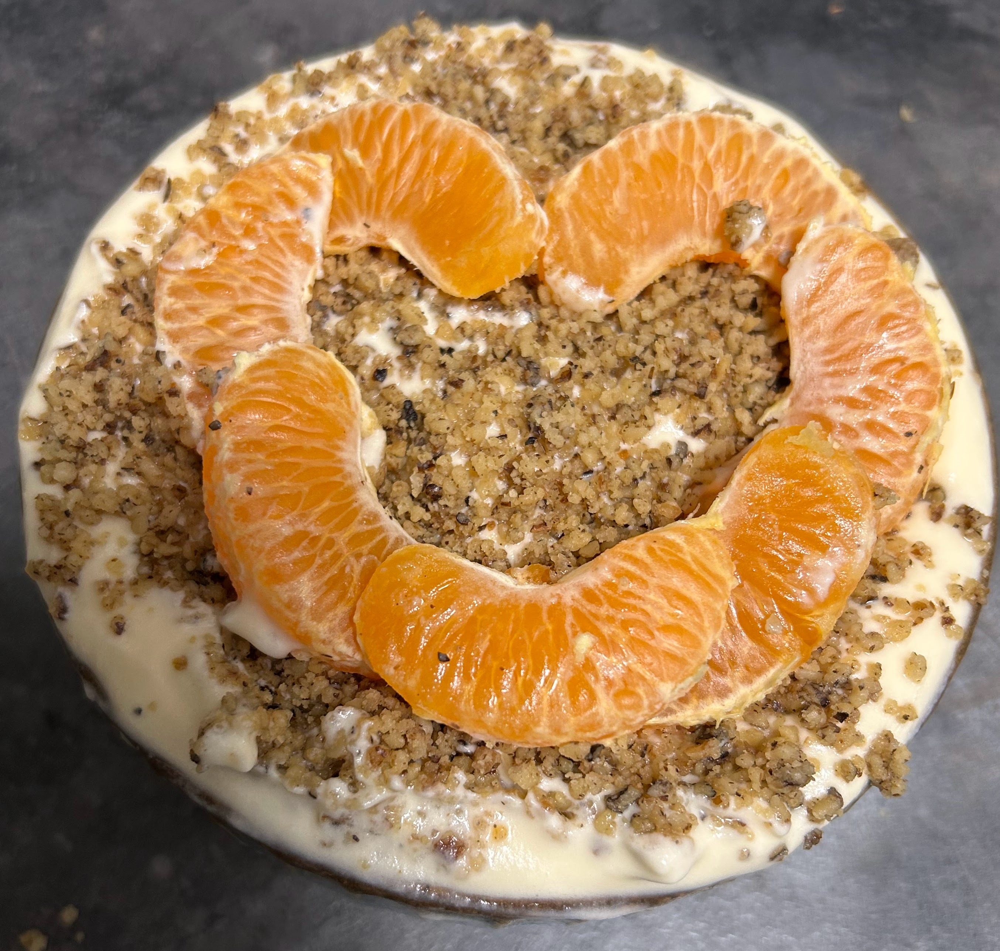

Home
Mandarin Mousse

Description
Another quick and easy-to-make dessert, but you'll need a mixer for this one, or you're going to
end up like me, mixing by hand trying to reach the same results as if working with a mixer. So make
sure to be properly equipped if you want to enjoy this tasty creamy dessert without working on it
like a horse.
Ingredients
- Mascarpone - 500gm
- Whipped Cream - 300gm
- Sugar - 100gm
- 2 Egg Yolks
- 2 Mandarin
- Wallnuts
Steps
- Put the mascarpone, whipped cream, sugar, egg yolks and the juice from one mandarin in a big bowl
- Mix them until you get a stiff cream
- Put it on a plate and level the layer
- Embellish the Mousse with the wallnuts and the remaining mandarin
- Let it stay in the fridge for some time and VOILA, you're dessert it's ready to be served